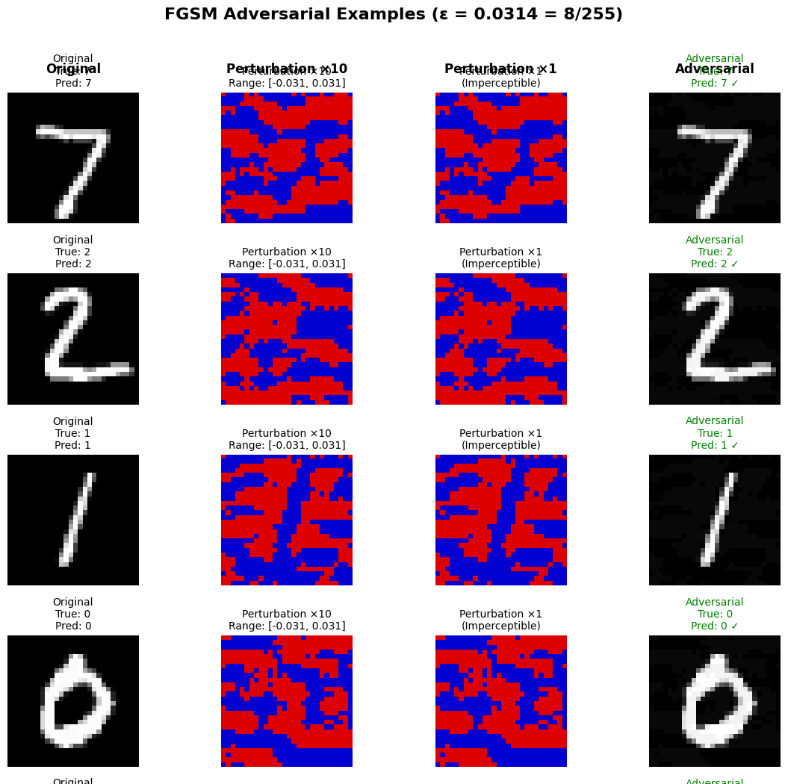
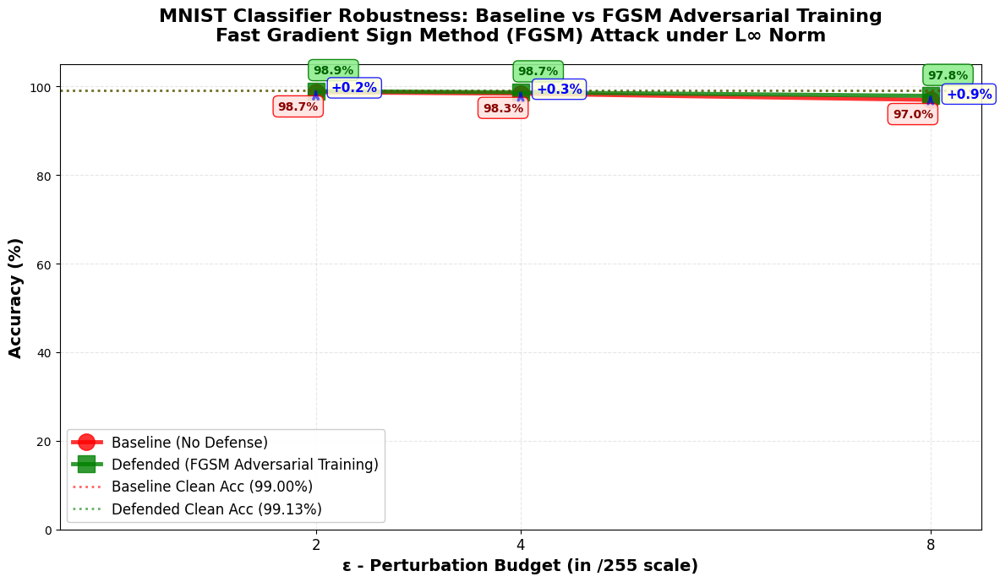

01 / Overview
The goal was to measure robustness, not just clean accuracy.
A model can perform well on clean images and still react badly to small, deliberate input changes. This project tested that gap on a simple and reproducible MNIST classifier.
How does the classifier behave under a controlled attack?
We measured accuracy after FGSM perturbations at ε values of 2/255, 4/255 and 8/255.
Can adversarial training improve the result?
We trained a second model on a mix of clean and FGSM-generated examples, then repeated the same evaluation.
02 / Experimental setup
A focused experiment with fixed settings and saved outputs.
Dataset and model
MNIST with 60,000 training images and 10,000 test images. The CNN used two convolution layers, two fully connected layers and dropout.
- Parameters
- 3,274,634
- Random seed
- 42
Training and evaluation
The baseline trained for five epochs. The defended model trained for eight epochs with 50% clean and 50% adversarial samples in each batch.
- Batch size
- 128
- Training ε
- 8/255

03 / Attack and defense
The same test was applied to the baseline and defended models.
Train the baseline
Train the CNN on clean MNIST images and measure clean test accuracy.
Run FGSM
Use the input gradient to create bounded perturbations at 2/255, 4/255 and 8/255.
Train the defense
Retrain with clean and FGSM examples, then repeat the same attack evaluation.
04 / Results
The baseline already performed well under FGSM, and adversarial training added a modest gain.

At ε=8/255, the defense reduced attack success by 0.78 percentage points, which is a 38% relative reduction. Clean accuracy stayed near 99%.
05 / Reproducibility and checks
We saved the settings, models, results and plots.
The repository includes the notebook, dependency list, trained model checkpoints, JSON result files, charts and written reports. The experiment uses a fixed random seed and records the attack budgets.
The L∞ norm was checked against the selected ε value.
The notebook verifies that input gradients are available for FGSM.
Original, perturbation and adversarial images were plotted for inspection.
06 / Limits
The experiment answers a narrow question, not every robustness question.
FGSM is useful for a fast first test, but stronger iterative attacks such as PGD and broader suites such as AutoAttack are needed for a more complete evaluation.
The high baseline robustness may come from the architecture and training setup. It should be tested again with stronger attacks before drawing a general conclusion.
The dataset makes experiments clear and inexpensive, but results do not automatically transfer to larger images or production models.
07 / Takeaways
The main value was the evaluation process.
What the project demonstrates
- Building and training a CNN in PyTorch
- Implementing a gradient-based attack
- Comparing clean and robust accuracy
- Saving reproducible experiment outputs
- Explaining results with clear limits
How it supports Data Engineering
- Structured experiment pipelines
- Versioned inputs, settings and outputs
- Data validation and metric tracking
- Documentation for other users
- Careful claims based on measured evidence
Team credit: this was a four-person ESAIP academic project. The public repository lists all four authors and contains the shared implementation and documentation.